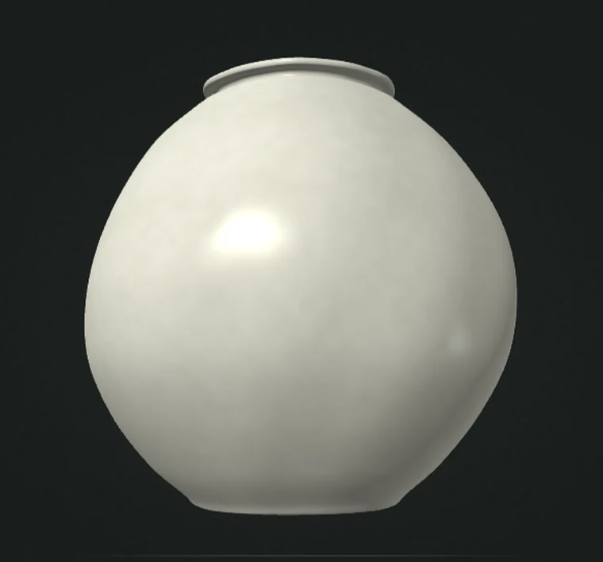

EXP. 001 · INTERACTIVE OBJECT

001 / CULTURE & INTERACTION
달항아리
MOON JAR — AN OBJECT, MANY STORIES
하나의 사물이 어떻게 오늘날의 문화적 상징이 되었을까? 달항아리를 직접 회전시키고, 형태와 이름 그리고 해석에 관한 질문을 탐색하는 첫 번째 실험입니다.

하나의 사물이 어떻게 오늘날의 문화적 상징이 되었을까? 달항아리를 직접 회전시키고, 형태와 이름 그리고 해석에 관한 질문을 탐색하는 첫 번째 실험입니다.
국립중앙박물관·영국박물관·크리스티. 실제 작품의 출처와 크기를 비교하며 다음 버전을 준비합니다.
한식 부스에서 했던 선택을 작은 경영 시뮬레이션으로 만들면 어떨까?
오늘 볼 영화 하나를 고르는 일을 조금 더 재미있게 만들어보는 실험.
역사와 문화를 공부하면서 어떤 사물이 사람들에게 의미를 얻는 과정에 관심을 가졌습니다. 지금은 그 관심을 화면 위에서 직접 탐험할 수 있는 경험으로도 바꿔보고 있어요.
이곳은 거창한 완성품만 전시하는 장소가 아닙니다. 아이디어가 처음 작동하던 순간, 예상과 다른 결과, 다음에 고치고 싶은 부분까지 차곡차곡 쌓아두는 작업실입니다.
첫 번째 리서치 노트 읽기 ↗